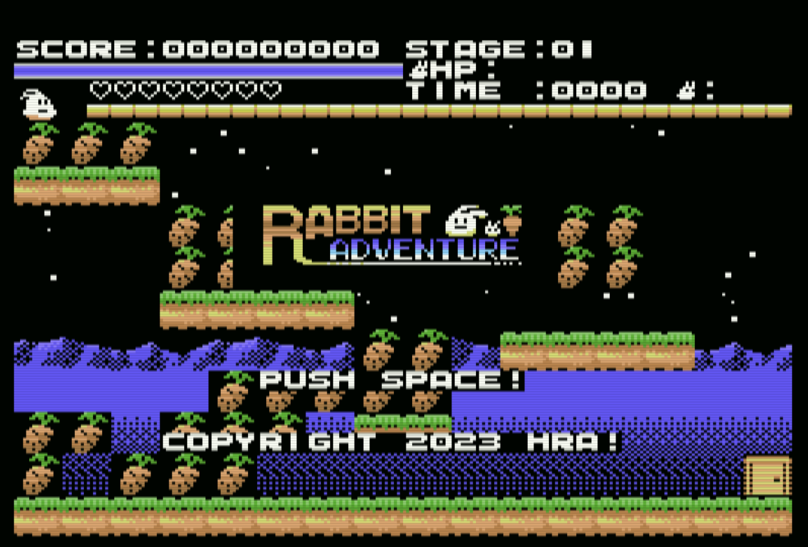

01. Rabbit Adventure

■ものがたり
あるところに、
うさぎの一家がすんでいました。
彼らは、近所の山でとれた人参が大好物です。
しかし最近、山の動物たちが乱暴になりました。
人参をとれなくなりました。
ぐぅ～～～、
子うさぎのお腹がなります。
子うさぎ「パパ、お腹がすいた～、え～ん！」
とうとう子うさぎは泣き出してしまいました。
パパうさぎ「仕方がない。山へ人参を採りに行ってくる。」
こうして、パパうさぎの戦いが始まりました。
■内容
シンプルなアクションゲームです。
各ステージにたくさんある人参を集めて扉に入るとステージクリアです。
ステージ４，８，１２，１６はボスステージ。特別凶暴になった動物が襲ってきます。
人参の葉を投げつけて、沈静化させましょう。
■発売時期
2023年夏、発売予定!!
■体験版
体験版をプレイ
・操作方法
左右でうさぎを操作、Aボタンでジャンプ、Bボタンでダッシュ、Bボタンを押しながらAボタンでハイジャンプ。
ステージに存在する人参を全て取ると、どこかに鍵が現れるのでそれをゲット。
鍵を取ると扉が開きます。扉に入るとステージクリアです。
ボスステージでは、Bボタンで人参の葉を投げられます。ボスの弱点に当たると、ボスの体力を削ることが出来ます。
左上のバーがボスの体力ゲージ。
うさぎは、敵・滝・炎に当たるとダメージを喰らいます。右上のHPのハートが無くなるとやられてしまいます。
右上に表示されている残数だけやり直しが出来ます。残数は、100万点で1匹ふえます。
人参を取ると、左上の子うさぎハートバーが伸びます。このハートバーがでているうちに次の人参をゲットすると
人参ゲットで得られる点数が増加していきます。なるべく連続で取って、ハイスコアを目指して下さい。
体験版では、ステージ1と2と4は製品版と同じ内容。ステージ3は体験版だけの特別ステージになっています。
ゲームの難易度は、少し難しいかもしれませんが、ステージの敵や人参や鍵の配置、敵の動きを覚えると楽にクリア
出来るようになります。
戻る